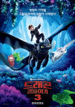
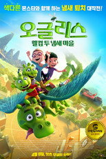

웨이브 애니50편 중 인기 50편 전체 영화 드라마·시리즈 애니 예능 순서: 넷플릭스 한국 TOP10 에 든 작품을 먼저(최근에 든 순), 그다음은 TMDB 전 세계 인기도 순입니다 — 넷플릭스 외 서비스는 공식 순위를 공개하지 않습니다. 제공처는 JustWatch 자료(2026-11-27 확인)이며 가입 전 서비스에서 최종 확인하세요. 웨이브 요금·할인 →
1 극장판 귀멸의 칼날: 무한열차편 Demon Slayer -Kimetsu no Yaiba- The Movie: Mugen Train 영화 · 2020 · 애니메이션 · 액션 · 117분 · 넷플릭스, 왓챠, 티빙에도 넷플릭스 한국 최고 1위 2 더 퍼스트 슬램덩크 The First Slam Dunk 영화 · 2022 · 애니메이션 · 코미디 · 125분 · 넷플릭스, 디즈니+, 왓챠, 티빙에도 넷플릭스 한국 최고 4위 3 마이펫의 이중생활 2 The Secret Life of Pets 2 영화 · 2019 · 애니메이션 · 코미디 · 86분 넷플릭스 한국 최고 9위 4 극장판 짱구는 못말려: 초시공! 태풍을 부르는 나의 신부 Crayon Shin-chan the Movie: Super-Dimension! The Storm Called My Bride 영화 · 2010 · 애니메이션 · 코미디 · 100분 · 넷플릭스, 티빙에도 넷플릭스 한국 최고 10위 5 날씨의 아이 Weathering with You 영화 · 2019 · 애니메이션 · 드라마 · 112분 · 왓챠에도 넷플릭스 한국 최고 9위 6 극장판 주술회전 0 Jujutsu Kaisen 0: The Movie 영화 · 2021 · 애니메이션 · 액션 · 105분 · 티빙에도 넷플릭스 한국 최고 5위 7 극장판 짱구는 못말려: 전설을 부르는 춤을 춰라, 아미고! Crayon Shin-chan the Movie: The Legend Called: Dance! Amigo! 영화 · 2006 · 코미디 · 애니메이션 · 91분 · 넷플릭스, 티빙에도 넷플릭스 한국 최고 7위 8 극장판 짱구는 못말려: 엄청 맛있어! B급 음식 서바이벌 Crayon Shinchan: Very Tasty! B-class Gourmet Survival!! 영화 · 2013 · 애니메이션 · 96분 · 넷플릭스, 티빙에도 넷플릭스 한국 최고 3위 9 극장판 포켓몬스터: 정글의 아이, 코코 Pokémon the Movie: Secrets of the Jungle 영화 · 2020 · 애니메이션 · 모험 · 101분 넷플릭스 한국 최고 8위 10 극장판 짱구는 못말려: 나의 이사 이야기 선인장 대습격 Crayon Shinchan the Movie: My Moving Story Cactus Attack 영화 · 2015 · 모험 · 애니메이션 · 104분 · 넷플릭스에도 넷플릭스 한국 최고 2위 11 짱구는 못말려 극장판: 태풍을 부르는 황금 스파이 대작전 Crayon Shin-chan the Movie: The Storm Called: Operation Golden Spy 영화 · 2011 · 애니메이션 · 107분 · 넷플릭스, 티빙에도 넷플릭스 한국 최고 6위 12 추억의 검정고무신 The Precious memory of Gogo Brothers 영화 · 2020 · 애니메이션 · 80분 · 넷플릭스, 왓챠, 티빙에도 넷플릭스 한국 최고 5위 13 몬스터 호텔 3 Hotel Transylvania 3: Summer Vacation 영화 · 2018 · 애니메이션 · 코미디 · 97분 넷플릭스 한국 최고 9위 14 보스 베이비 The Boss Baby 영화 · 2017 · 애니메이션 · 코미디 · 97분 · 왓챠에도 넷플릭스 한국 최고 5위 15 크루즈 패밀리 영화 · 2013 · 애니메이션 · 모험 · 98분 제공처 ↗ 16 마다가스카의 펭귄 영화 · 2014 · 가족 · 애니메이션 · 92분 제공처 ↗ 17 너의 이름은. 영화 · 2016 · 애니메이션 · 로맨스 · 106분 · 왓챠에도 제공처 ↗ 18 스파이더맨: 뉴 유니버스 Spider-Man: Into the Spider-Verse 영화 · 2018 · 애니메이션 · 액션 · 117분 · 넷플릭스, 디즈니+, 왓챠에도 제공처 ↗ 19 씽 Sing 영화 · 2016 · 애니메이션 · 코미디 · 108분 · 넷플릭스, 왓챠에도 제공처 ↗ 20 영화 너무 좋아 폼포씨 영화 · 2021 · 애니메이션 · 코미디 · 94분 · 티빙에도 제공처 ↗ 21 드래곤 길들이기 2 How to Train Your Dragon 2 영화 · 2014 · SF/판타지 · 액션 · 102분 · 넷플릭스에도 제공처 ↗ 22 BLACK JACK 시리즈 · 2004 · 애니메이션 · 드라마 · 왓챠, 티빙에도 제공처 ↗ 23 아메쿠 타카오의 추리 카르테 시리즈 · 2025 · 애니메이션 · 미스터리 · 왓챠, 티빙에도 제공처 ↗ 24 목소리의 형태 영화 · 2016 · 애니메이션 · 드라마 · 130분 · 넷플릭스, 왓챠, 티빙에도 제공처 ↗ 25 노다메 칸타빌레 시리즈 · 2007 · 애니메이션 · 코미디 · 왓챠에도 제공처 ↗ 26 
드래곤 길들이기 3 How to Train Your Dragon: The Hidden World 영화 · 2019 · 애니메이션 · 가족 · 104분 · 넷플릭스에도 제공처 ↗ 27 아오하라이드 시리즈 · 2014 · 애니메이션 · 코미디 · 왓챠, 티빙에도 제공처 ↗ 28 마다가스카 Madagascar 영화 · 2005 · 모험 · 애니메이션 · 86분 · 왓챠에도 제공처 ↗ 29 몬스터 호텔 Hotel Transylvania 영화 · 2012 · 애니메이션 · 코미디 · 91분 · 왓챠에도 제공처 ↗ 30 소년가행 시리즈 · 2018 · 애니메이션 · SF/판타지 · 티빙에도 제공처 ↗ 31 10 라이브즈 영화 · 2024 · 애니메이션 · 코미디 · 87분 · 왓챠, 티빙에도 제공처 ↗ 32 마이 리틀 포니: 더 무비 영화 · 2017 · 가족 · 애니메이션 · 99분 · 왓챠, 티빙에도 제공처 ↗ 33 공각기동대 영화 · 1995 · 액션 · 애니메이션 · 83분 · 왓챠, 티빙에도 제공처 ↗ 34 자천 시리즈 · 2021 · 애니메이션 · SF/판타지 제공처 ↗ 35 나소흑전기: 첫만남편 영화 · 2019 · 애니메이션 · SF/판타지 · 102분 · 왓챠, 티빙에도 제공처 ↗ 36 쿨하고 바보 같은 남자 시리즈 · 2022 · 애니메이션 · 코미디 · 왓챠, 티빙에도 제공처 ↗ 37 
오글리스: 웰컴 투 냄새 마을 영화 · 2021 · 애니메이션 · 모험 · 85분 · 왓챠, 티빙에도 제공처 ↗ 38 시간을 달리는 소녀 영화 · 2006 · SF/판타지 · 애니메이션 · 97분 · 왓챠, 티빙에도 제공처 ↗ 39 극장판 포켓몬스터: 뮤츠의 역습 영화 · 1998 · 애니메이션 · 가족 · 95분 · 왓챠, 티빙에도 제공처 ↗ 40 발레리나 Ballerina 영화 · 2016 · 애니메이션 · 가족 · 89분 · 왓챠, 티빙에도 제공처 ↗ 41 크리스마스에 기적을 만날 확률 영화 · 2003 · 애니메이션 · 드라마 · 90분 · 왓챠, 티빙에도 제공처 ↗ 42 아마게돈 영화 · 1996 · 애니메이션 · SF/판타지 · 87분 제공처 ↗ 43 태일이 영화 · 2021 · 애니메이션 · 드라마 · 99분 · 왓챠, 티빙에도 제공처 ↗ 44 마당을 나온 암탉 영화 · 2011 · 애니메이션 · 가족 · 93분 · 넷플릭스, 왓챠, 티빙에도 제공처 ↗ 45 핑크퐁 시네마 콘서트: 우주대탐험 영화 · 2019 · 애니메이션 · 가족 · 66분 · 넷플릭스, 왓챠, 티빙에도 제공처 ↗ 46 도티와 영원의 탑 영화 · 2023 · 애니메이션 · 모험 · 86분 · 왓챠, 티빙에도 제공처 ↗ 47 우리별 일호와 얼룩소 영화 · 2014 · 애니메이션 · 코미디 · 90분 · 왓챠에도 제공처 ↗ 48 핑크퐁 시네마 콘서트 2: 원더스타 콘서트 대작전 영화 · 2022 · 애니메이션 · 가족 · 73분 · 왓챠, 티빙에도 제공처 ↗ 49 기기괴괴 성형수 영화 · 2020 · 애니메이션 · 드라마 · 85분 · 왓챠, 티빙에도 제공처 ↗ 50 파닥파닥 영화 · 2012 · 애니메이션 · 드라마 · 78분 · 왓챠에도 제공처 ↗ 웨이브 애니 전체 50편 — 작품 찾기에서 조건으로 보기 →